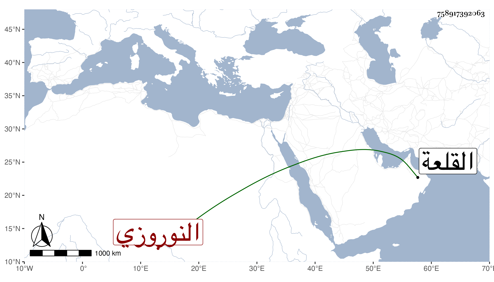

0902Sakhawi.DawLamic.ITO20230111-ara1.EIS1600.758917392063
Biography ID: 758917392063
1088
سودون النوروزي آخر . تنقل بعد سيده نوروز الحافظي حتى صار سلحدارا في أوائل الدولة الأشرفية برسباي ثم أمير عشرة في الظاهرية ومدرس النوب ثم ولاه الأشرف اينال نيابة القلعة إلى أن مات بها في ربيع الآخر سنة اثنتين وستين عن نحو سبعين ، وكان عاقلا ساكنا بشوشا حشما متواضعا وقورا مليحا كريما مع اسراف على نفسه فيما قيل .
